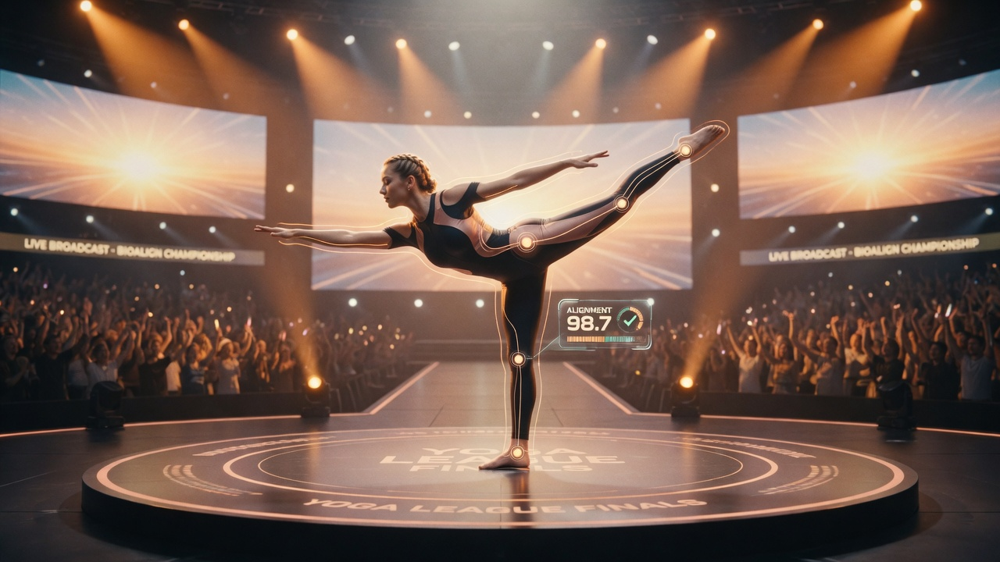
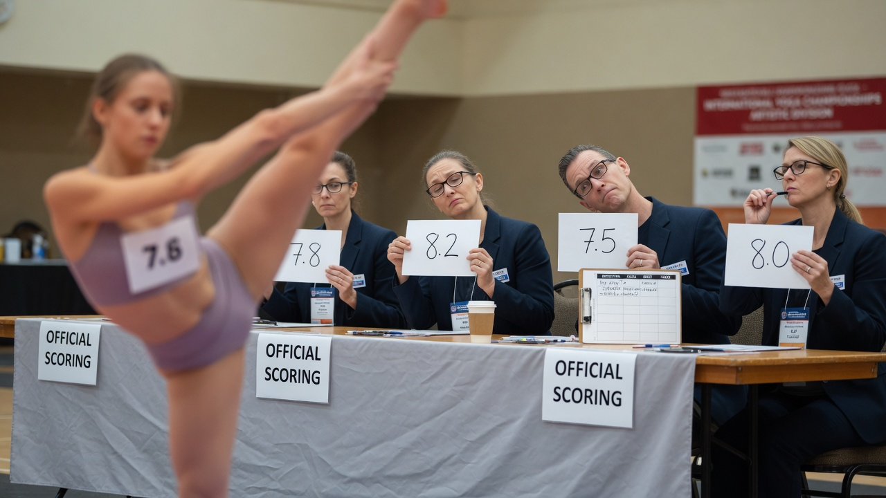
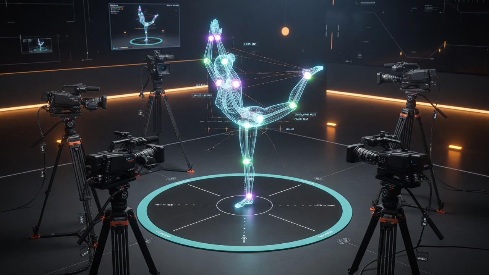
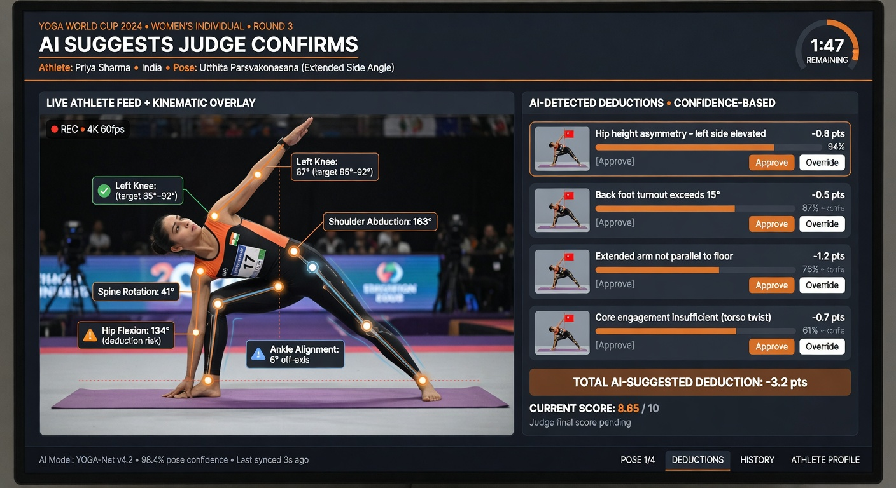
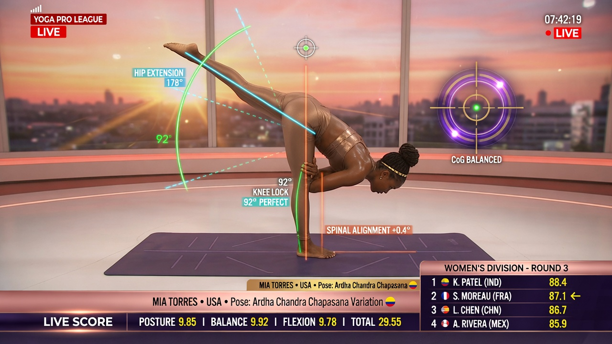
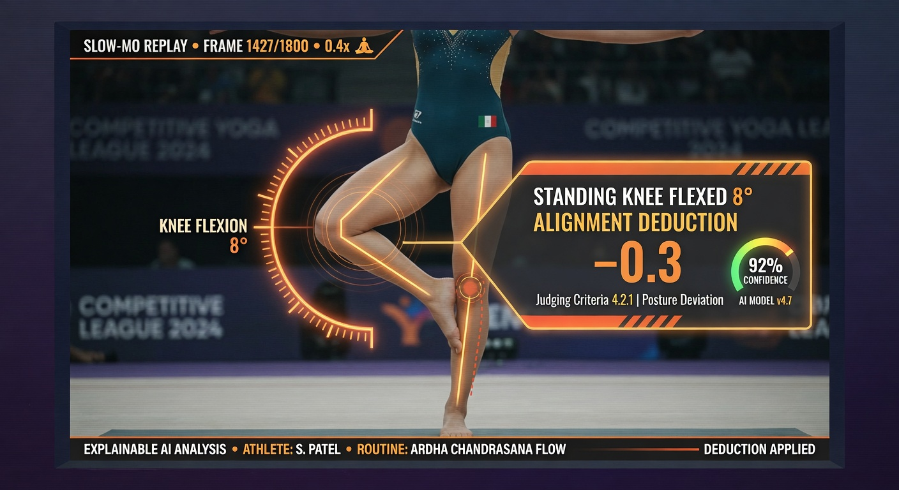
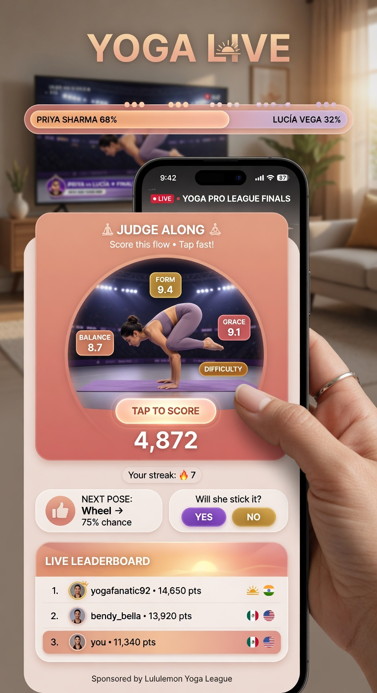
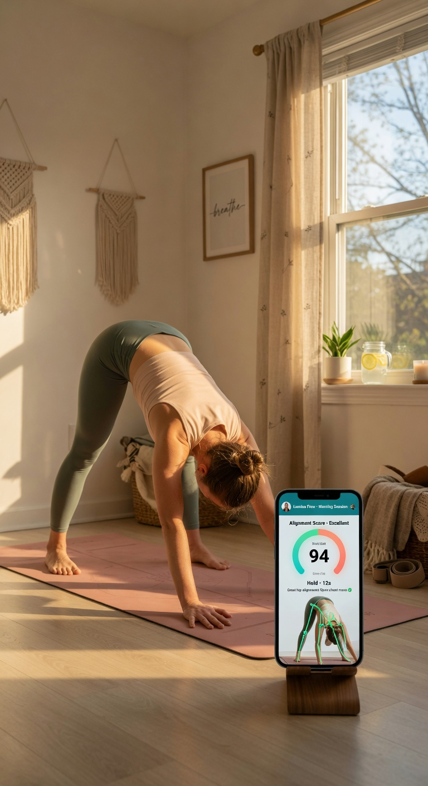

Hawk-Eye for the world's oldest discipline. We make the invisible scorable — and make competitive yoga finally watchable.

Objective, camera-only measurement that assists referees: joint-angle deviation, stability, hold time, candidate deductions — every one explainable and replayable.
Real-time AR graphics, live scores, leaderboards, Simulcam ghost comparisons, and a second-screen app that makes the sport legible and gripping.
The machine suggests; the human judge confirms. Every score is signed, auditable, and survives a televised protest.


The referee console shows measured joint angles, candidate deductions, and a confidence for each — Approve / Override one tap away.


Tap any score and the replay shows the exact joint, the exact angle, and the exact reason: "standing knee flexed 8° — alignment −0.3."
Black-box scoring is rejectable. Evidence is undeniable. This turns disputes into highlights.
A second-screen app turns watching into playing — and teaches scoring literacy that grows the sport.

A pure broadcast-tech vendor arrives with cameras and an empty model. We arrive with a pre-trained model and an audience funnel.

| Stream | Who pays | Shape |
|---|---|---|
| Officiating + broadcast platform | Federation / organiser | Per-event & annual licence |
| Data & analytics SaaS | Teams, coaches, athletes | Subscription |
| Second-screen / fan | Fans & sponsors | Freemium + sponsorship |
| AsanaAI consumer app | Practitioners | Subscription (the funnel) |
| Anonymised benchmarks | Partners | Data licensing |
| Integration / pro-services | Organisers | Project fees |
Indicative program: $2.0M–$3.5M across pilot → full deployment. Buy graphics, build the IP — margin protected.
A shipped product, a hardened plan, and a pilot we can stand up in weeks.
| Phase | Scope | Proves |
|---|---|---|
| 0 · Training mode | Calibration + dataset building | Diverse, fair, labelled data |
| 1 · Solo pilot | 4 cameras, 1–2 criteria, 1 overlay, 1 Simulcam, "show me why" | Latency + auditability |
| 2 · Multi-format | 6–8 cameras, Pair, Musical, full dashboard | Production officiating |
| 3 · Group | Group-of-5 (contact stays human-judged) | Full-format coverage |
We give judges a defensible instrument, broadcasters a sport that explains itself, and the federation a flywheel only we own.